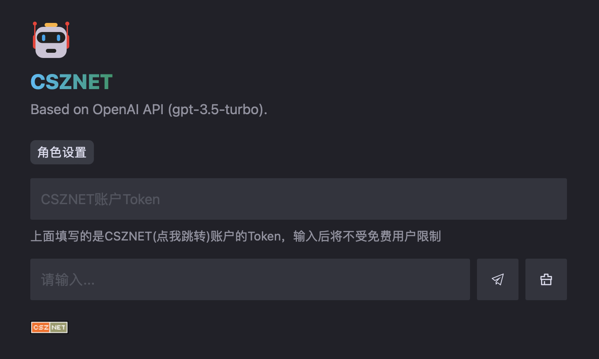

ChatGPT官网的免费对话虽说免费，但是问题很多，比如一段时间不交互就要重新进入
再比如稳定性差、经常需要CF验证，于是就自己使用API对接了一个
一开始是直接使用的ChatGPT-Demo
后来key额度被用完（120刀账户，用完5刀账户就被封了）
觉得ChatGPT-Demo没有做防刷处理有点不安全（hash加密密钥根本就没调用上，超时验证也是无效的）
就自己用Golang写了个简单的会员系统进行对接，做了游客提问周期限制

虽然说是基于别人的项目进行二次开发，但也在开发的过程中熟悉了astro框架，对nodejs方面的认知得到提高
写的会员系统也是比之前写的Golang代码质量要高得多，可以保留初版供后续开发